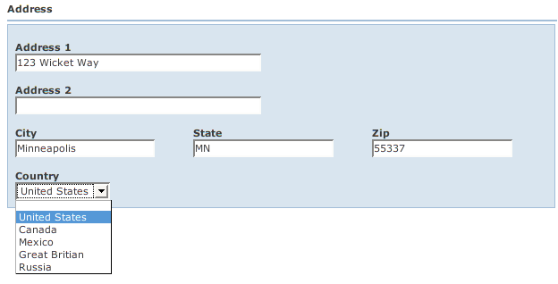

Back: Tables Next: MoreInformation
There are times when you may want to implement your own Fields (wicket.contrib.webbeans.fields.Field). wicket.contrib.webbeans.fields.AbstractField is the base class for the Field interface. It is recommended that you use the AbstractField base class, or an extension of it, if your field will participate in a BeanForm.
By convention, all Fields must define a constructor with the signature:
public SomeField(String id, IModel model, ElementMetaData metaData, boolean viewOnly)
In this example, we're going to enhance the wicket.contrib.webbeans.examples.customfields.Address bean to add a Country property. The Country property will be a non-Java enumeration. While Java enums are statically defined at compile-time, there are cases where you need to derive the values at runtime - let's say from a database. To make things simpler for you, WWB defines an interface called wicket.contrib.webbeans.model.NonJavaEnum. It also has a base class for this interface called wicket.contrib.webbeans.model.BaseNonJavaEnum. So let's look at our wicket.contrib.webbeans.examples.customfields.Country enumeration:
Embed:wicket.contrib.webbeans.examples.customfields.Country
You would normally query the database for countries in the static values() method. However, we don't have a database, so we just hard coded them. The idea is that you would retrieve these values at runtime. The static values() and valueOf() methods are similar to those found on a Java language enum.
Next we need to implement the Field. WWB has a base Field class wicket.contrib.webbeans.fields.EnumField that can be used for Java enums and NonJavaEnums. Here's our wicket.contrib.webbeans.examples.customfields.CountryField that extends EnumField:
Embed:wicket.contrib.webbeans.examples.customfields.CountryField
Next, we need to register the CountryField type so that whenever WWB sees a Country bean, it will know how to handle it. In this example, this is done in wicket.contrib.webbeans.examples.customfields.CustomFieldPage:
Embed:wicket.contrib.webbeans.examples.customfields.CustomFieldPage
For simplicity, we add the mapping to ComponentRegistry directly in our Page code. However, you would normally create your instance or sub-class of ComponentRegistry outside of the Page code so that it can be used from multiple pages.
The end result looks like this:

Back: Tables Next: MoreInformation